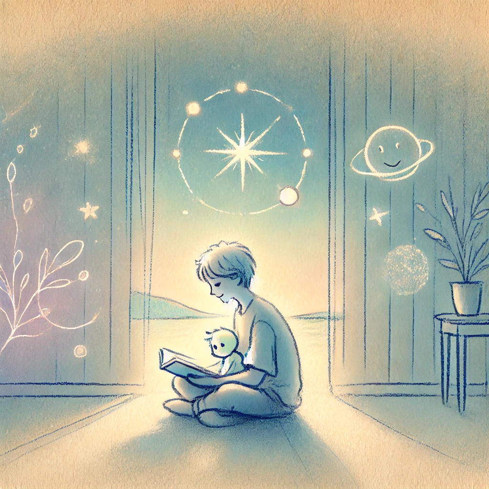

Author
앙투안 드 생텍쥐페리
Published Date
1943
감상평에 대한 AI그림
혹시 이미 너무 알려진 나머지 굳이 찾아서 읽으려 하지 않은 책이 있을까?
나에겐 '어린왕자'가 그런 작품이었다. 소위 '어른들을 위한 동화책'이라고도 하는 어린왕자는 내게 있어 그저 동심을 찾아주는 그림책 정도였다. 그러다 시간이 흘러 나는 어른의 단계에 이르렀고, 때마침 찾아온 호기심에 이 책을 읽게 되었다.
소설 어린왕자는 상징과 비유가 풍부하게 담긴 작품으로 단순한 이야기를 통해 삶에 진지한 메시지를 전달한다. 때문에 처음 이 책을 읽었을 땐 내용이 생각보다 직관적이다는 느낌을 받았다. 기대한 것처럼 막 예상치 못한 울림을 준다 같은 건 아니었지만, 오히려 잔잔하게 흘러가는 흐름은 일상 속에서 잊고 있던 중요한 것들에 대해 깨닫게 해줬던 것 같다. 어린왕자는 아이들에겐 공감을, 어른들에겐 되새김을 선사하는 작품 같다. 이 글을 읽는 누구에게나 추천하고 싶은 책이다.

감상평에 대한 AI 감정평가
이 감상평은 매우 진지하고 깊이 있는 반성적인 성격을 띠고 있습니다. '어린왕자'를 처음 접할 때의 평범한 감상과, 시간이 지나면서 더 깊이 있는 이해와 깨달음을 얻었다는 점에서 성장과 변화의 과정을 담고 있습니다. 특히 '책의 상징과 비유에 대한 인식'이 잘 드러나며, '어린이와 어른이 이 책에서 각각 다른 메시지를 받아들이는 점'을 강조하고 있습니다. 감상자는 이 책이 단순히 어린이용 동화에 그치지 않고, 어른들에게도 중요한 삶의 교훈을 전달한다는 점을 느끼고, 그 경험을 다른 사람에게 추천하고 싶은 마음을 표현하고 있습니다.
감정적으로는 '성찰적이고 차분한 느낌'을 주며, 이 책을 통해 얻은 메시지와 깨달음이 '자기 자신에게 중요한 변화를 일으켰다고 느끼는 것' 같습니다. 책을 다시 읽고자 하는 이유가 '호기심과 시간이 지나면서 조금 더 진지하게 느껴지게 된 점'에서, 감동을 받거나 깊은 생각을 유도한 요소가 느껴집니다.
종합적으로 보면, '긍정적이고 따뜻한 감동'을 주는 감상평이며, 이 책을 다른 사람에게도 추천할 만큼 가치 있는 경험을 얻었다는 감정이 잘 표현된 글입니다.